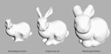

About OpenVDB
OpenVDB is an Academy Award-winning C++ library comprising a hierarchical data structure and a suite of tools for the efficient manipulation of sparse, time-varying, volumetric data discretized on three-dimensional grids. It is based on VDB, which was developed by Ken Museth at DreamWorks Animation, and it offers an effectively infinite 3D index space, compact storage, fast data access, and a collection of algorithms specifically optimized for the data structure for common tasks such as filtering, CSG, compositing, numerical simulation, sampling, and voxelization from other geometric representations. The technical details of VDB are described in the paper "VDB: High-Resolution Sparse Volumes with Dynamic Topology".
OpenVDB was originally developed at DreamWorks Animation primarily by
- Ken Museth
- Peter Cucka
- Mihai Aldén
- David Hill
The library was first Open Sourced by the team at DreamWorks in August 2012 with an emphasis on efficient Level Set representations and tools. It has since seen many additions which have broadened its scope and feature set. Some more recent notable additions include:
- OpenVDB Points: spatially-organized points into OpenVDB topology for fast access and greater opportunity for data compression - Contributed by DNEG (2016)
- OpenVDB AX: A domain specific language for OpenVDB, providing a fast, highly parallalisable and portable solutions for custom manipulation - Contributed by DNEG (2018)
- NanoVDB: A standalone static-topology implementation of OpenVDB, offering support for GPUs - Contributed by NVIDIA (2020)
OpenVDB was the first open source project to transition its governance in August 2018 from DreamWorks to a newly formed organization called the Academy Software Foundation (ASWF). The ASWF was created to host, mediate and support Open Source software across the motion picture industry. OpenVDB in particular has consistently benefited from being Open Source with collaboration across many studios and communities. Its continued development is ensured by the OpenVDB Technical Steering Committee (TSC)
OpenVDB TSC Members
- Ken Museth (Chair)
- Nicholas Avramoussis
- Dan Bailey
- Jeff Lait
- Andre Pradhana
- Richard Jones
Features and Tools
Efficient Data Structure
OpenVDB represents high-resolution sparse volumes compactly both in memory and on disk, via a novel hierarchical data structure that offers an effectively infinite 3D index space and via a custom, lossless codec for fast file I/O.
Fast Voxel Access
OpenVDB features fast (constant-time) random and sequential access to voxels. This is the result of a new, CPU-like caching scheme and compact, hierarchical bit mask iterators.
{kind=link}
{kind=link}
{kind=link}
{kind=link}
Filters
OpenVDB’s suite of filters for smoothing and applying noise to volumes forms the basis for DreamWorks Animation’s feature film cloud modeling toolset.
{kind=link}
Morphological Operations
OpenVDB features fast morphological operations like dilation and erosion, which are essential when dealing with dynamic volumes, for example during level set interface tracking.
{kind=link}
Topological Operations
OpenVDB’s fast topological operations (union, intersection and difference) are the foundation for many of its sparse algorithms, in particular ones for masked filtering and meshing.
Geometric Transforms
OpenVDB includes tools for advection of level sets or point clouds through vector fields, with the option to constrain points to surfaces, and tools to reshape, resample and segment volumes, highlighted by fast, seamless volumetric fracturing.
{kind=link}

Mathematical Transforms
OpenVDB supports scalar- and vector-valued volumes and provides vector calculus and related operations such as gradient, Laplacian, closest-point transform and vector field curl and divergence.
{kind=link}
{kind=link}
Rendering Support
OpenVDB includes a standalone OpenGL volume visualizer as well as a simple, fast command-line ray tracer that takes advantage of accelerated ray traversal methods.
{kind=link}
Compositing Tools
OpenVDB provides a variety of efficient tools for procedurally combining volumes.
Python Support
OpenVDB includes a Python module with functions for basic manipulation of volumes.
Point Clouds and Tools
OpenVDB can natively store point data within its hierarchy using PointDataGrids. These grids can store the points with attributes directly in the VDB Grid. Points are spatially-organized into VDB voxels to provide faster access and a greater opportunity for data compression compared with linear point arrays.
AX: Domain Specific Language
OpenVDB AX is a DSL which can be built alongside OpenVDB. It is an expression language where expressions are JIT-compiled and used with a tailored multi-threaded execution framework, specifically designed for VDB. AX promises high performance and custom manipulation for VDB based kernels.
Houdini Cloud FX
The new Cloud FX tools offer an artist-friendly way of building, sculpting and rendering cloud formations. This workflow utilizes sparse volume sculpting tools created as part of the OpenVDB open source initiative. The integration of these tools is the result of a direct collaboration between DreamWorks Animation and Side Effects Software.
Additional Contributors
Side Effects Software
- Neil Dickson
- Halfdan Ingvarsson
- Edward Lam
- John Lynch
- Adrian Saldanha
Pixar Animation Studios
- Julian Fong
Solid Angle
- Mike Farnsworth
- Marcos Fajardo
Digital Domain
- John Johansson
- Fredrik Salomonsson
Rainmaker Entertainment
- Nicholas Yue
Industrial Light & Magic
- Rick Hankins
Special Thanks
DreamWorks Animation
- Jeff Budsberg
- Brett Miller
- Koen Vroeijenstijn